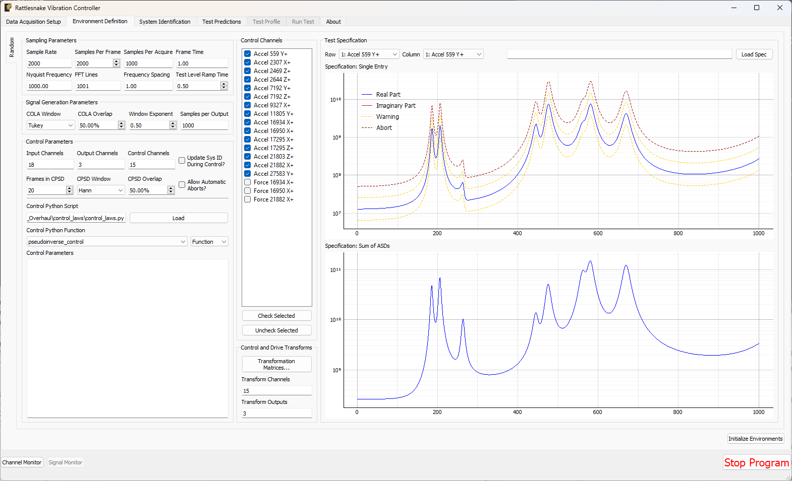
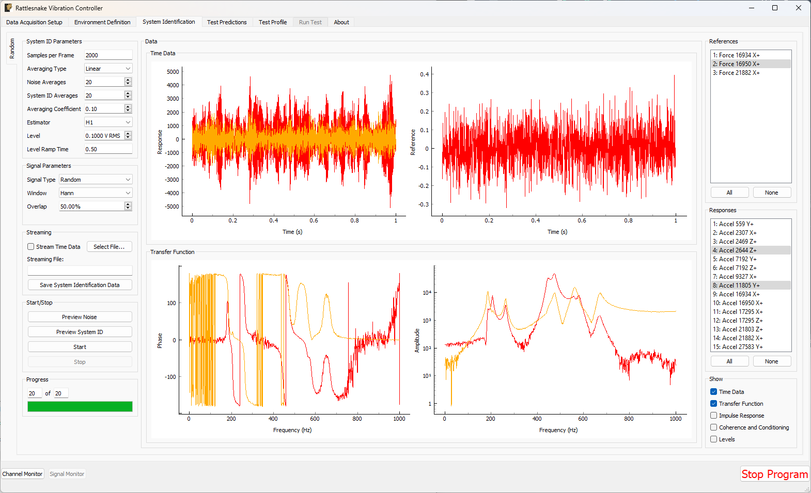
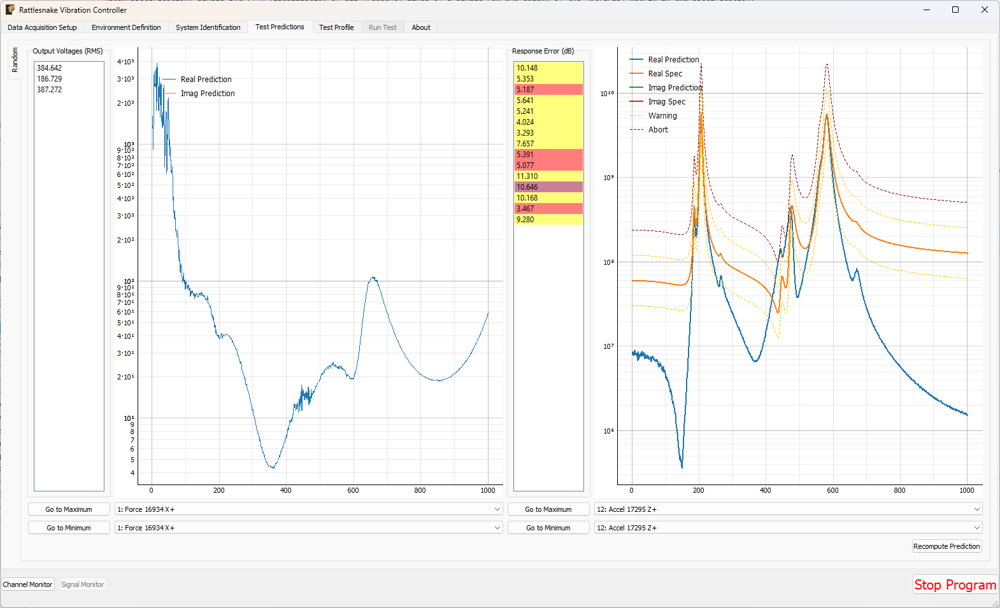
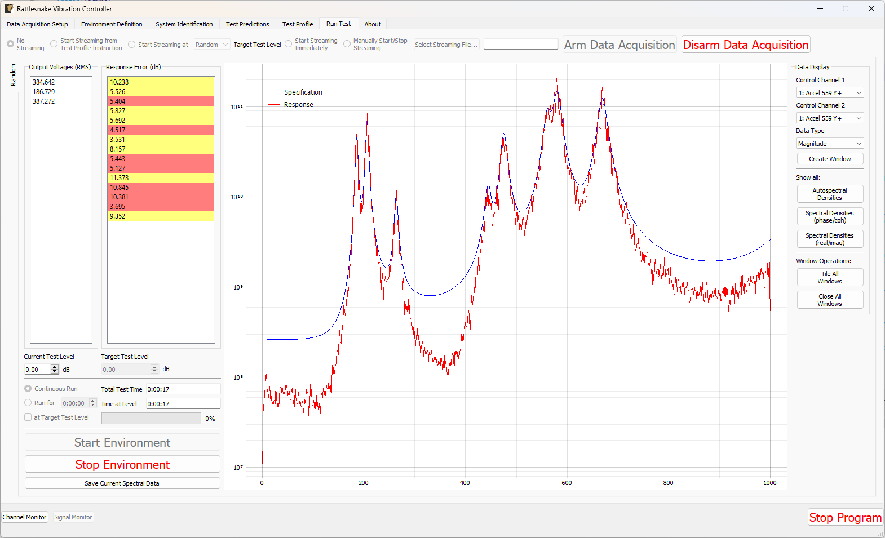
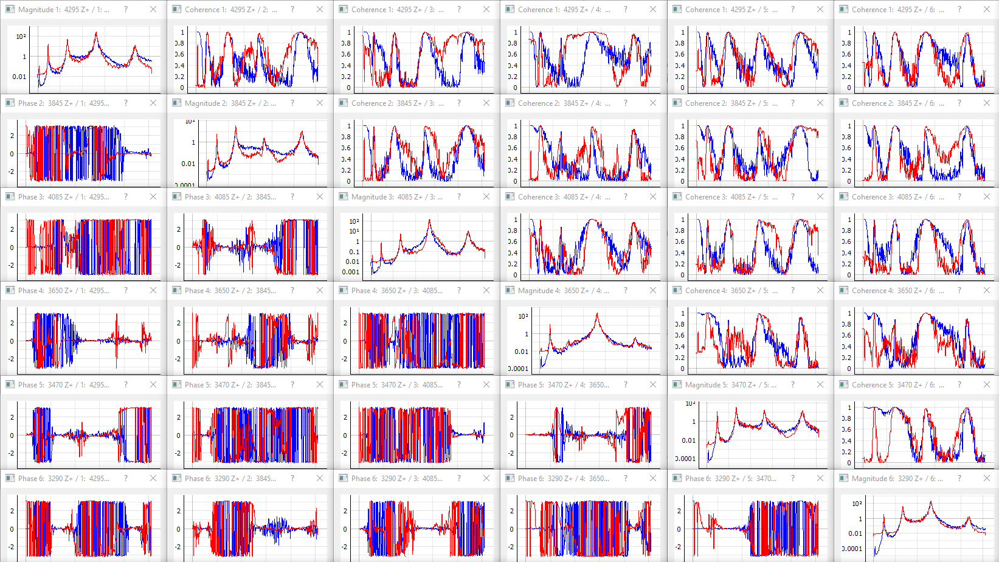
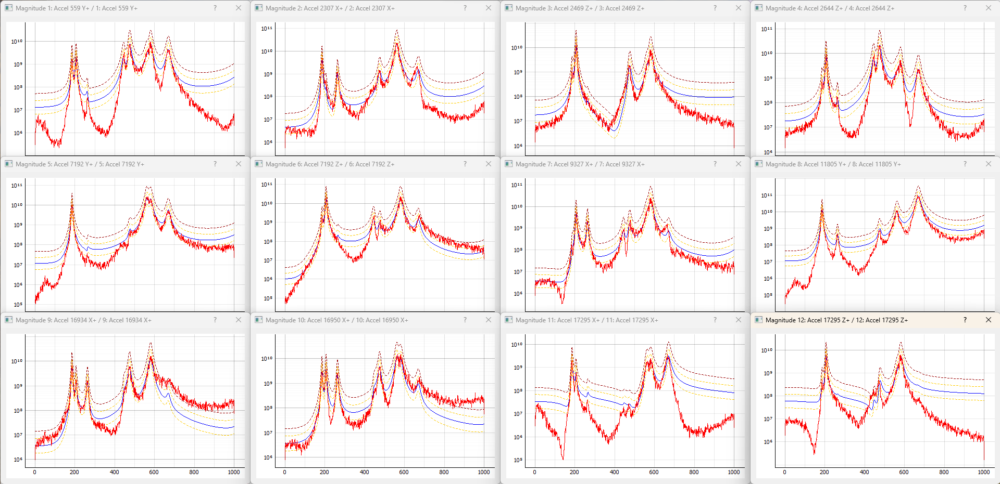

Part III. Rattlesnake Environments
The key to Rattlesnake's flexibility is its implementation of various environment types. These environments can be run stand-alone or in combination with other environments. A general environment will receive response data from the controller and then perform some analysis on that data to create the next set of output signals that will be required by the controller. This Part will describe the existing environments in the controller and provide information required to implement additional environments.
Chapter 12 describes the MIMO Random Vibration environment where users will control to vibration spectra in the form of CPSD matrices. Chapter 13 describes the MIMO Transient Vibration environment, where users will control directly to time responses. Chapter 14 Time History Generator environment, which allows users to specify the signal played to the excitation devices. Chapter 15 describes the Modal environment, where users can perform dynamic characterization tests using shaker or impact hammer excitation. Chapter 16 describes the Combined Environments functionality in Rattlesnake which allows users to run multiple environments simultaneously.
Chapter 17 describes the general process to implement new environments. Implementing new environments in Rattlesnake is a very involved process that requires a good amount of knowledge of the Rattlesnake software architecture, as well as advanced programming concepts including object-oriented programming and inheritance, multiprocessing, and GUI design and implementation.
12. Multiple Input/Multiple Ouptut Random Vibration
The first environment implemented in the Rattlesnake controller was the MIMO Random Vibration environment. This environment aims to control the vibration response of a component to specified levels by creating output signals with the correct levels, coherence, and phase at each frequency line. The governing equation for MIMO Random Vibration is
where the CPSD matrix of the responses result from some signals exciting the structure represented by transfer function matrices . In a typical vibration control problem, the control system tries to compute the signal matrix that best reproduces the desired response .
12.1. Specification Definition
The first step in defining a Random Vibration control problem is the definition of the vibration response that is desired. This vibration specification can be derived using various approaches, perhaps from test data from some environment test, predictions from a model, or derivations from a standard. Regardless of its source, the specification defines the response levels, coherence, and phase of each control channel at each frequency line in the test.
Rattlesnake accepts the specification in the form of a 3D array consisting of a complex CPSD matrix defined at each frequency line. Specification CPSD matrices can be loaded from Numpy *.npz files or Matlab *.mat files. For each of these files, Rattlesnake respects the natural dimension ordering of a dataset consisting of "stacks" of matrices that the specification can be visualized to be. For Matlab, which customarily uses the third dimension as the "stacking" dimension for 3D datasets, the specification dimensions should be where is the number of control channels and is the number of frequency lines. For Numpy/Python the more natural ordering is , essentially taking the last dimension of the Matlab array and moving it to the first dimension in the Numpy array. Both Matlab *.mat and Numpy *.npz files should contain the following data fields:
cpsdA (for*.npzfiles) or (for*.matfiles) complex array containing the CPSD matrix at each frequency defined inf.fA array of frequencies corresponding to the frequency lines in theCPSDmatrix.
For example, for a test consisting of three control channels has a given specification is defined from 10 Hz to 100 Hz with 2 Hz spacing, the variable f in the specification file would be length 46 and have values [10, 12, 14, ... 98, 100] and the variable cpsd would be size in a *.npz file or in a *.mat file.
The ordering of the rows and columns of the CPSD matrices defining the specification are the same order as the control channels in the Channel Table on the Data Acquisition Setup tab. This means that the first row and column of the CPSD matrix will correspond to the first channel that is selected as a control channel in the Control Channels list on the Environment Definitions tab. The second row and column to the second channel selected as a control channel, and so on. Note that if Control transformations are specified, then the first row and column of the specification will correspond to the first virtual control channel, which is the first row of the control transformation matrix. The second row and column will correspond to the second virtual control channel.
The specification is defined in units of where is the engineering unit specified by the Engineering Unit column of the channel table for the control channels.
Please note that Rattlesnake will not interpolate a specification for you! Any frequency line that is not defined in the specification will be set to zero. This allows a user to specify the specification only over certain bandwidths of interest. This also means that if a user provides a specification with 2 Hz frequency spacing but runs a test with parameters that result in 1 Hz frequency spacing, every second frequency line will end up being set to zero, which will generally result in very poor control.
Rattlesnake MIMO Random Vibration specification files can also contain optional warning and abort limits. Note that these limits only operate on the APSD portion (i.e. the diagonal) of the CPSD matrices. It is not currently possible to set a limit based on, for example, the coherence between two channels in Rattlesnake. These are defined in the specification files in fields:
warning_upperA (for*.npzfiles) or (for*.matfiles) array containing an upper warning level at each frequency defined inffor each control channel.warning_lowerA (for*.npzfiles) or (for*.matfiles) array containing a lower warning level at each frequency defined inffor each control channel.abort_upperA (for*.npzfiles) or (for*.matfiles) array containing an upper abort level at each frequency defined inffor each control channel.abort_lowerA (for*.npzfiles) or (for*.matfiles) array containing a lower abort level at each frequency defined inffor each control channel.
Any combination of the above fields can be specified. For example, a lower limit can be defined without an equivalent upper limit. An abort limit can be defined without a warning limit. However, if the field is defined in the specification file, it must have the correct shape, which means that the limit must be defined for all frequency lines and for all control channels. If a user does not want to limit on specific frequency ranges or specific channels, the limit can be set to a value of NaN. Rattlesnake will ignore portions of the limit specifications that contain NaN values.
Throughout the MIMO Random Vibration environment, channels will be flagged as yellow if they cross a warning limit, and flagged as red if they cross an abort limit. Additionally, if the Allow Automatic Aborts? checkbox is checked on the Environment Definition tab, the environment will automatically stop if the abort limit is crossed.
12.2. Defining the MIMO Random Vibration Environment in Rattlesnake
In addition to the specification, there are a number of signal processing parameters that are used by the MIMO Random Vibration environment. These, along with the specification, are defined on the Environment Definition tab in the Rattlesnake controller on a sub-tab corresponding to a MIMO Random Vibration environment. Figure 12-1 shows a MIMO Random Vibration sub-tab. The following subsections describe the parameters that can be specified, as well as their effects on the analysis.

Figure 12-1. GUI used to define a MIMO Random Vibration environment.
12.2.1. Sampling Parameters
The Sampling Parameters section of the MIMO Random Vibration definition sub-tab consists of the following parameters:
- Sample Rate The global sample rate of the data acquisition system. This is set on the
Data Acquisition Setuptab, and displayed here for convenience as a read-only value. - Samples Per Frame The number of samples used when computing the FFT. Making this number larger will increase the frequency resolution of the measurement while also making each measurement frame longer. Note that this value should never be set so that the frequency resolution of the FFT is finer than the frequency resolution of the specification, otherwise the frequency lines without a corresponding value in the specification will be controlled to zero. Because adjusting this parameter will adjust the frequency resolution of the measurement, any loaded specification will need to be re-loaded with the new frequency resolution.
- Samples Per Aquire The number of additional samples required per measurement frame when taking into account overlapping of the signals that will occur in the system identification and CPSD calculations. This is a computed quantity presented for convenience, so the user cannot modify it directly.
- Frame Time The amount of time it takes to measure a frame of data, in seconds. This is a computed quantity presented for convenience, so the user cannot modify it directly.
- Nyquist Frequency The maximum bandwidth of the measurement given the sampling rate. This is the largest frequency value in the FFT. This is a computed quantity presented for convenience, so the user cannot modify it directly.
- FFT Lines The number of frequency lines in the FFT. This is a computed quantity presented for convenience, so the user cannot modify it directly.
- Frequency Spacing The frequency resolution of the FFT. This is a computed quantity presented for convenience, so the user cannot modify it directly.
- Test Level Ramp Time The time it takes the environment to ramp between test levels. This is done to prevent sharp adjustments to the controller which may damage test hardware. This is also the time it takes for the controller to ramp up to the starting level from zero when the test is started, as well as to ramp back to zero from the final test level when testing is completed.
12.2.2. Signal Generation Parameters
The Signal Generation Parameters section of the MIMO Random Vibration definition sub-tab consists of the following parameters:
- COLA Window The window function used to smooth between individual time signal realizations during the COLA process.
- COLA Overlap The amount of overlap between signals when smoothing individual time signal realizations during the COLA process.
- Window Exponent The exponent used on the COLA window function. This should generally be left at 0.5, which will result in a signal with constant variance.
- Samples per Output The number of additional samples output per measurement frame when taking into account overlapping of the signals that will occur COLA calculations. This is a computed quantity presented for convenience, so the user cannot modify it directly.
12.2.3. Control Channels
The Control Channels list allows users to select the channels in the test that will be used by the environment to perform control calculations. These are the channels that will match the rows and columns of the specification file.
12.2.4. Control Parameters
The Control Parameters section of the MIMO Random Vibration definition sub-tab consists of the following parameters:
- Input Channels The total number of channels being measured by the Rattlesnake, including response channels and output channels. This is a computed quantity presented for convenience, so the user cannot modify it directly.
- Output Channels The number of excitation signals being used to control the vibration response of this environment. This is a computed quantity presented for convenience, so the user cannot modify it directly.
- Control Channels The number of response channels being used in the control. This is a computed quantity presented for convenience, so the user cannot modify it directly.
- Update System ID During Control? Selecting this option allows Rattlesnake to continue to update FRF during control. This can be useful for nonlinear systems as the structure may behave differently at higher levels of excitation. One should be aware that if signals become too correlated during a test, the FRF calculations may not be able to separate responses by exciter and the FRFs may be incorrect leading to poor control. Additionally, if something in the test setup breaks or comes loose, the controller may see that the responses are decreasing for a given excitation level and continually try to increase the excitation level, which could result damage to test equipment or the test article.
- Frames in CPSD The number of measurement frames used when computing the CPSD matrices of the responses and output signals. Note that if
Allow Automatic Aborts?is active, the environment will not shut down the number of frames specified by this setting has been acquired. If fewer frames have been acquired than are specified by this setting, the CPSD matrix might be noisy due to only having acquired a small number of measurement frames. - CPSD Window The window function applied during the CPSD matrix calculations.
- CPSD Overlap The percentage overlap between measurements frames used to compute the CPSD matrix.
- Allow Automatic Aborts? Selecting this option will allow the environment to shut itself down if an abort limit is reached as defined in the specification file. If not selected, the channel will be flagged red, but the environment will still continue to run.
The Control Parameters section of the MIMO Random Vibration definition sub-tab also includes functionality for loading in custom control laws. See Writing a Custom Control Law for information on defining a custom control law.
- Control Python Script The Python script containing a custom control law that is currently loaded into the Rattlesnake controller.
- Load Pressing this button will bring up a file selection dialog to load in a new Python script containing a custom control law.
- Control Python Function This selector presents the functions, generators, and classes within the loaded Python script that can be used as custom control laws.
- Control Parameters This text box allows arbitrary input to be passed to custom control laws as a string. It is up to the control law to specify what this extra input must be and parse whatever input the user gives it.
12.2.5. Control and Drive Transforms
The Control and Drive Transforms section of the MIMO Random Vibration definition sub-tab consists of the following parameters:
- Transformation Matrices... Selecting this button will bring up the transformation matrices dialog box, which allows the user to specify linear transformations between the physical responses and excitation signals and virtual responses and excitation signals. See Using Transformation Matrices for more information.
- Transform Channels The number of virtual control degrees of freedom after applying transformation matrices. This is a computed quantity presented for convenience, so the user cannot modify it directly.
- Transform Outputs The number of virtual excitation devices after applying transformation matrices. This is a computed quantity presented for convenience, so the user cannot modify it directly.
Note that if Transformation matrices are defined, the number of control channels ends up being the number of rows of the Response Transformation Matrix, rather than the number of physical control channels. The number of physical control channels will be equal to the number of columns of the transformation matrix. The number of rows and columns of the specification loaded should be equal to the number of rows in the transformation.
12.2.6. Test Specifications
The test specification is loaded into the environment in the Test Specification section of the MIMO Random Vibration definition:
- Row A drop-down menu consisting of all response channels used to visualize a certain row and column of the specification.
- Column A drop-down menu consisting of all the response channels used to visualize a certain row and column of the specification.
- Load Spec A button that when pressed will bring up a file selection dialog to read in a specification from a Numpy
*.npzor Matlab*.matfile. - Specification: Single Entry A visualization of all frequency lines of a single row and column of the CPSD matrix in the specification.
- Specification: Sum of ASDs The sum of the diagonal entries of the CPSD matrix at each frequency line, which is commonly used as a test metric.
12.3. System Identification for the MIMO Random Vibration Environment
When all environments are defined and the Initialize Environments button is pressed, Rattlesnake will proceed to the next phase of the test, which is defined on the System Identification tab.
MIMO Random Vibration requires a system identification phase to compute the matrices used in the control calculations of equation (12.1). Figure 12-2 shows the GUI used to perform this phase of the test.

Figure 12-2. System identification GUI used by the MIMO Random Vibration environment.
Rattlesnake's system identification phase will start with a noise floor check, where the data acquisition records data on all the channels without specifying an output signal. After the noise floor is computed, the system identification phase will play out the specified signals to the excitation devices, and transfer functions will be computed using the responses of the control channels to those excitation signals. Section System Identification describes the System Identification tab and its various parameters and capabilities.
12.4. Test Predictions for the MIMO Random Vibration Environment
Once the system identification is performed, a test prediction will be performed and results displayed on the Test Predictions tab, shown in Figure 12-3. This is meant to give the user an idea of the test feasibility. The left side of the window displays excitation information, including RMS signal levels required as well as the excitation spectra expected. The right side of the window displays the predicted responses compared to the specification as well as the predicted RMS dB error. This figure will also show any abort or warning limits imposed. Channels will be highlighted in yellow if they cross a warning level and will be highlighted in red if they cross an abort level. For example in the test in Figure 12-3, all channels are predicted to cross the warning threshold, and a handful are predicted to cross the abort threshold.

Figure 12-3. Test prediction GUI which gives the user some idea of the test feasibility.
12.5. Running the MIMO Random Vibration Environment
The MIMO Random Vibration environment is then run on the Run Test tab of the controller.
With the data acquisition system armed, the environment can be started manually with the Start Environment button. Once running, it can be stopped manually with the Stop Environment button. With the data acquisition system armed and the environment running, the GUI looks like Figure 12.4.

Figure 12-4. GUI for running the MIMO Random Vibration environment.
There are various operations that can be performed when setting up and running the MIMO Random Vibration environment, and many visualization operations as well.
12.5.1. Test Level
Two test levels exist in the MIMO Random Vibration Environment. The Current Test Level specifies the current level of the control in decibels relative to the specification level, which is 0 dB. Note that all data and visualizations on the Run Test window are scaled back to full level, so users should not be surprised if for example the values reported in the Output Voltages (RMS) table do not change significantly with test level. See Generation of Time Histories for more information on this implementation detail.
The second test level is the Target Test Level. This option can be used to specify a level at which data starts streaming to the disk if the user does not wish to save low level data. Additionally, the controller can be made to stop controlling automatically after a certain time at a target test level. This is done to ensure that the controller does not spend too much time at a level that could eventually damage a part.
12.5.2. Test Timing
The MIMO Random Vibration environment has multiple options for test timing. If Continuous Run is selected, the environment will continue until it is manually stopped. A specific run time can be specified using the Run for h:mm:ss option and specifying a time in the h:mm:ss selector. The at Target Test Level checkbox specifies whether or not to activate the timer at any test level or only when the test is at the target test level.
The MIMO Random Vibration environment will constantly update the Total Test Time and Time At Level time displays when the environment is active. A progress bar will be displayed when the controller is set to only run for a specified time. When the progress bar reaches 100%, the environment will shut down automatically.
12.5.3. Test Metrics and Visualization
The MIMO Random Vibration environment displays a number of global metrics to help evaluate the success of a test. RMS signal voltage values are displayed in the Output Voltages (RMS) table. RMS dB errors for each control channel are displayed in the Response Error (dB) table. These errors will also be colored yellow or red if the given channel is crossing a warning or abort level. If an abort level is reached and the Allow Automatic Aborts? option is selected on the Environment Definition page, then the environment will shut down automatically.
The Run Test tab for the MIMO Random Vibration environment displays the sum of APSD functions of the response CPSD matrix compared to the sum of APSD functions of the specification in a large plot in the middle of the main window, which can be seen in Figure 12-4 . This can be considered an "Average" response level for the test compared to the "Average" specification level.
To interrogate specific channels, the Data Display section of the Run Test window offers several options. The row and column of the CPSD matrix can be selected using Control Channel 1 and Control Channel 2 selectors. The Data Type of the plot can be specified as Magnitude, Phase, Coherence, Real, or Imaginary. Pressing the Create Window button then creates the specified plot.
Some convenience operations are also included to visualize all channels. In the Show all: section, pressing the Autospectral Densities button will bring up one window per control channel and display the APSD function for each. Pressing the Spectral Densities (phase/coh) or Spectral Densities (real/imag) buttons will attempt to display the entire CPSD matrix, displaying either the phase and coherence or real and imaginary parts in the upper and lower triangular portions of the matrix. Be aware that these convenience functions with a large number of control channels can easily overwhelm the computer with plotting operations causing the GUI to become unresponsive, so use these operations with caution. Figure 12-5 shows an example displaying the full CPSD matrix with coherence and phase for a test with six control degrees of freedom.

Figure 12-5. Visualizing individual channels (magnitude, coherence, and phase).
If a specification has warning and abort limits defined, these will also be plotted, as shown in Figure 12-6.

Figure 12-6. Figure showing the APSD data for each channel, as well as the warning and abort limits.
Further convenience operations are available in the Window Operations: section. Pressing Tile All Windows will rearrange all channel windows neatly across the screen. Pressing Close All Windows will close all open channel windows.
12.5.4. Saving Data from the MIMO Random Environment
Time data can be saved from the MIMO random vibration environment through Rattlesnake's streaming functionality, described in Run Test.
Users can also directly write the spectral data from the environment to a file. This will also result in a netCDF file, however the fields will be slightly different. This is described more fully in Output NetCDF File Structure.
12.6. Output NetCDF File Structure
When Rattlesnake streams time data to a netCDF file, environment-specific parameters are stored in a netCDF group with the same name as the environment name. Similar to the root netCDF structure described in Rattlesnake Output Files , this group will have its own attributes, dimensions, and variables, which are described here.
12.6.1. NetCDF Dimensions
fft_linesThe number of frequency lines in the FFT.twoA dimension of size 2, which is required for the warning and abort variables (there are two limits, upper and lower).specification_channelsThe number of channels defined in the specification provided to the MIMO Random Vibration environment.response_transformation_rowsThe number of rows in the response channel transformation (See Section 12.8 Using Tranformation Matrices). This is not defined if no response transformation is used.response_transformation_colsThe number of columns in the response channel transformation (See Section 12.8 Using Transformation Matrices). This is not defined if no response transformation is used.reference_transformation_rowsThe number of rows in the output transformation (See Section 12.8 Using Transformation Matrices). This is not defined if no output transformation is used.reference_transformation_colsThe number of columns in the output transformation (See Section 12.8 Using Transformation Matrices). This is not defined if no output transformation is used.control_channelsThe number of physical channels used for control. Note that this may be different from thespecification_channelsdue to the presence of a transformation matrix.
12.6.2. NetCDF Attributes
sysid_frame_sizeThe number of samples per measurement frame in the system identificationsysid_averaging_typeThe type of averaging used in the system identification, linear or exponentialsysid_noise_averagesThe number of measurement frames acquired for the noise floor calculationsysid_averagesThe number of measurement frames acquired for the system identification calculationsysid_exponential_averaging_coefficientThe weighting coefficient used for new frames in the exponential averaging schemesysid_estimatorThe FRF estimator used to compute the transfer functions during the system identificationsysid_levelThe level used by the system identification in volts RMS.sysid_level_ramp_timeThe time to ramp up to the test level when starting and ramp back to zero when stopping the system identificationsysid_signal_typeThe signal type used by the system identificationsysid_windowThe window function applied to the time data during the system identificationsysid_overlapThe overlap fraction between measurement frames used for system identificationsysid_burst_onThe fraction of a measurement frame that a burst is active for burst random excitation during system identificationsysid_pretriggerThe fraction of a measurement used as a pre-trigger for burst random excitation during system identificationsysid_burst_ramp_fractionThe fraction of a measurement frame used to ramp the burst up to full level and back to zerosamples_per_frameThe number of samples per measurement frame used in the FFTtest_level_ramp_timeThe time to ramp between test levelscpsd_overlapThe percentage overlap used when computing FRF and CPSD matricesupdate_tf_during_control1 if transfer functions were updated during control, 0 otherwisecola_windowThe window function used by the COLA processcola_overlapThe overlap between realizations of excitation signals used during the COLA processcola_window_exponentThe exponent on the COLA window functionframes_in_cpsdThe number of frames used to compute CPSD matricescpsd_windowThe window function used to compute CPSD matricescontrol_python_scriptThe path to the Python script used to control the MIMO Random Vibration environmentcontrol_python_functionThe function (or class or generator function) in the Python script used to control the MIMO Random Vibration environmentcontrol_python_function_typeThe type of the object used for the control law (function, generator, or class)control_python_function_parametersThe extra parameters passed to the control law.
12.6.3. NetCDF Variables
specification_frequency_linesThe frequency values in the specification associated with each frequency line. Type: 64-bit float; Dimensions:fft_linesspecification_cpsd_matrix_realThe real part of the MIMO Random Vibration specification. NetCDF files cannot handle complex data types so real and imaginary parts are split into two variables. Type: 64-bit float; Dimensions:fft_linesspecification_channelsspecification_channelsspecification_cpsd_matrix_imagThe imaginary part of the MIMO Random Vibration specification. NetCDF files cannot handle complex data types so real and imaginary parts are split into two variables. Type: 64-bit float; Dimensions:fft_linesspecification_channelsspecification_channelsspecification_warning_matrixThe data used to define the warning limits in the specification. The first index in the first dimension defines the lower limit, and the second index in the first dimension defines the upper limit. Type: 64-bit float; Dimensions:twospecification_channelsspecification_abort_matrixThe data used to define the abort limits in the specification. The first index in the first dimension defines the lower limit, and the second index in the first dimension defines the upper limit. Type: 64-bit float; Dimensions:twospecification_channelsresponse_transformation_matrixThe response transformation matrix (See Section 12.8 Using Tranformation Matrices). This is not defined if no response transformation is used. Type: 64-bit float; Dimensions:response_transformation_rowsresponse_transformation_colsoutput_transformation_matrixThe output transformation matrix (See Section \ref{sec:rattlesnake_environments_transformation_matrices}). This is not defined if no output transformation is used. Type: 64-bit float; Dimensions:output_transformation_rowsoutput_transformation_colscontrol_channel_indicesThe indices of the active control channels in the environment. Type: 32-bit int; Dimensions:control_channels
12.6.4. Saving Spectral Data
In addition to time streaming, Rattlesnake's MIMO Random Vibration environment can also save the current realization of spectral data directly to the disk by clicking the Save Current Spectral Data button. The spectral data is stored in a NetCDF file similar to the time streaming data; however, it has additional dimensions and variables to store the spectral data.
The single additional dimension is:
drive_channelsThe number of drive channels active in the environment.
There are also several additional variables to store the spectral data:
frf_data_realThe real part of the most recently computed value for the transfer functions between the excitation signals and the control response signals. NetCDF files cannot handle complex data types so real and imaginary parts are split into two variables. Type: 64-bit float; Dimensions:fft_linesspecification_channelsdrive_channelsfrf_data_imagThe imaginary part of the most recently computed value for the transfer functions between the excitation signals and the control response signals. NetCDF files cannot handle complex data types so real and imaginary parts are split into two variables. Type: 64-bit float; Dimensions:fft_linesspecification_channelsdrive_channelsfrf_coherenceThe multiple coherence of the control channels computed during the test. Type: 64-bit float; Dimensions:fft_linesspecification_channelsresponse_cpsd_realThe real part of the most recently computed value for the CPSD matrix at the control channels. NetCDF files cannot handle complex data types so real and imaginary parts are split into two variables. Type: 64-bit float; Dimensions:fft_linesspecification_channelsspecification_channelsresponse_cpsd_imagThe imaginary part of the most recently computed value for the CPSD matrix at the control channels. NetCDF files cannot handle complex data types so real and imaginary parts are split into two variables. Type: 64-bit float; Dimensions:fft_linesspecification_channelsspecification_channelsdrive_cpsd_realThe real part of the most recently computed value for the CPSD matrix at the excitation channels. NetCDF files cannot handle complex data types so real and imaginary parts are split into two variables. Type: 64-bit float; Dimensions:fft_linesdrive_channelsdrive_channelsdrive_cpsd_imagThe imaginary part of the most recently computed value for the CPSD matrix at the excitation channels. NetCDF files cannot handle complex data types so real and imaginary parts are split into two variables. Type: 64-bit float; Dimensions:fft_linesdrive_channelsdrive_channelsresponse_noise_cpsd_realThe real part of the CPSD matrix at the control channels during the noise floor measurement that occurred during system identification. NetCDF files cannot handle complex data types so real and imaginary parts are split into two variables. Type: 64-bit float; Dimensions:fft_linesspecification_channelsspecification_channelsresponse_noise_cpsd_imagThe imaginary part of the CPSD matrix at the control channels during the noise floor measurement that occurred during system identification. NetCDF files cannot handle complex data types so real and imaginary parts are split into two variables. Type: 64-bit float; Dimensions:fft_linesspecification_channelsspecification_channelsdrive_noise_cpsd_realThe real part of the CPSD matrix at the excitation channels during the noise floor measurement that occurred during system identification. NetCDF files cannot handle complex data types so real and imaginary parts are split into two variables. Type: 64-bit float; Dimensions:fft_linesdrive_channelsdrive_channelsdrive_noise_cpsd_imagThe imaginary part of the CPSD matrix at the excitation channels during the noise floor measurement that occurred during system identification. NetCDF files cannot handle complex data types so real and imaginary parts are split into two variables. Type: 64-bit float; Dimensions:fft_linesdrive_channelsdrive_channels
12.7. Writing a Custom Control Law
The flexibility of the Rattlesnake framework is highlighted by the ease in which users can implement and iterate on their own ideas. For the MIMO Random Vibration control type, users can implement custom control laws using a custom Python function, or alternatively a generator function or class which allow state to be maintained between function calls. This section will provide instructions and examples for implementing a custom control law.
The controller will provide various data types to the control law functions which are:
specificationThe target CPSD matrix for the control channels; complex 3D array ()warning_levelsThe warning levels provided with the specification; complex 2D array ()abort_levelsThe abort levels provided with the specification; complex 2D array ()transfer_functionThe current estimate of the transfer function between the control responses and the excitation voltages; complex 3D array ()noise_response_cpsdThe levels and correlation of the noise floor measurement on the control channels obtained during system identification; complex 3D array ()noise_reference_cpsdThe levels and correlation of the noise floor measurement on the excitation channels obtained during system identification; complex 3D array ()sysid_response_cpsdThe levels and correlation of the control channels obtained during system identification; complex 3D array ()sysid_reference_cpsdThe levels and correlation of the noise floor measurement on the excitation channels obtained during system identification; complex 3D array ()multiple_coherenceThe multiple coherence for each control channel; real 2D array ()framesThe number of measurement frames acquired so far, used to compute various parameters in the control law. This can be compared tototal_framesto determine if a full set of measurement frames has been acquired, or if the estimation of the various parameters could improve with continued averaging; scalar integertotal_framesThe total number of frames used to compute the CPSD and FRF matrices; scalar integerextra_parametersExtra parameters provided to the controller. The control law can parse this value to allow extra arguments to be passed to the control law; stringlast_response_cpsdThe most recent control CPSD, which can be used for error-based control; complex 3D array ()last_output_cpsdThe most recent excitation CPSD, which can be used for drive-based control; complex 3D array ()
where size is the number of frequency lines, is the number of control channels, and is the number of output signals. Note that the values passed into the function may be defined using arbitrary variable names (e.g. transfer_function may be instead called H, or specification may be instead called spec or Syy); however, the order of the variables passed into each function will always be consistent.
12.7.1. Defining a control law using a Python function
Python functions are the simplest approach to define a custom control law that can be used with the Rattlesnake software; however, they are limited in that a function's state is completely lost when a function returns. Still, they can be used to implement relatively complex control laws as long as no state persistence is required.
A Python function used to define a MIMO Random Vibration control law in Rattlesnake would have the following general structure within a Python script.
# Any module imports, initialization code, or helper functions would go here
# Now we define the control law. It always receives the same arguments from the controller.
def control_law(specification, # Specifications
warning_levels, # Warning levels
abort_levels, # Abort Levels
transfer_function, # Transfer Functions
noise_response_cpsd, # Noise levels and correlation
noise_reference_cpsd, # from the system identification
sysid_response_cpsd, # Response levels and correlation
sysid_reference_cpsd, # from the system identification
multiple_coherence, # Coherence from the system identification
frames, # Number of frames in the CPSD and FRF matrices
total_frames, # Total frames that could be in the CPSD and FRF matrices
extra_parameters = '', # Extra parameters for the control law
last_response_cpsd = None, # Last Control Response for Error Correction
last_output_cpsd = None, # Last Control Excitation for Drive-based control
):
# Code to perform the control would go here
output_cpsd = ...
# Finally, we need to return an output CPSD matrix
return output_cpsd
Listing 12.1 General Python function structure for defining a custom Random Vibration control law called control_law in Rattlesnake
The function must return an output_cpsd, which is a complex 3D array with size ().
Three examples are presented to illustrate how a control function may be created.
12.7.1.1 Pseudoinverse Control
Perhaps the simplest strategy to perform MIMO control is to simply invert the transfer function matrix to recover the least-squares solution of the optimal output signal from the desired responses. This first example will demonstrate that approach.
The mathematics for this control strategy are relatively simple; pre- and post-multiply the specification by the pseudoinverse () of the transfer function matrix , noting that the post-multiplicand is complex-conjugate transposed (). This calculation is performed for each frequency line.
In Python code, the above mathematics would look like
import numpy as np # Import numpy to get access to the pseudoinverse (pinv) function
H_pinv = np.linalg.pinv(H_xv) # Invert the transfer function and assign to a variable so we don't have to invert twice
G_vv = H_pinv@G_xx@H_pinv.conjugate().transpose(0,2,1) # Perform the mathematics described above.
Listing 12.2. Computing the pseudoinverse calculation to solve for a least-squares output CPSD matrix
For users not familiar with Python and its numeric library numpy, the following points are clarified
numpyis imported and assigned to the aliasnp, which lets us just type innprather than the longer namenumpywhen we want to accessnumpyfunctions.- The
numpypseudoinverse functionpinvis stored in the linear algebra packagelinalgwithinnumpy, therefore to accesspinv, we need to callnp.linalg.pinv - The
pinvcan perform a pseudoinverse on "stacks" of matrices, so even though we are only calling thepinvfunction once, it is actually performing the pseudoinverse over all frequency lines - The
@symbol in Python is the matrix multiplication operation. Unlike Matlab, Python doesn't support the syntax.*to differentiate elementwise and matrix multiplcation. In Python,*is elementwise and@is matrix multiplication. This operation also works over stacks of matrices, soG_vvis computed over all frequency lines. - The
transposefunction of anumpyarray accepts as its arguments the new ordering of the indices. Recalling that in Python, the first index is index 0, the second is index 1, etc., essentially what this command is doing is taking the existing indices(0,1,2)and re-ordering them as(0,2,1), or said another way(frequency_line,row,column)re-ordered as(frequency_line,column,row), effectively transposing each matrix in the stack without modifying the 0-index corresponding to frequency line.
Wrapping the above mathematics into the function definition from Listing 12.1, the control law can be defined as
import numpy as np
def pseudoinverse_control(
specification, # Specifications
warning_levels, # Warning levels
abort_levels, # Abort Levels
transfer_function, # Transfer Functions
noise_response_cpsd, # Noise levels and correlation
noise_reference_cpsd, # from the system identification
sysid_response_cpsd, # Response levels and correlation
sysid_reference_cpsd, # from the system identification
multiple_coherence, # Coherence from the system identification
frames, # Number of frames in the CPSD and FRF matrices
total_frames, # Total frames that could be in the CPSD and FRF matrices
extra_parameters = '', # Extra parameters for the control law
last_response_cpsd = None, # Last Control Response for Error Correction
last_output_cpsd = None, # Last Control Excitation for Drive-based control
):
# Invert the transfer function using the pseudoinverse
tf_pinv = np.linalg.pinv(transfer_function)
# Return the least squares solution for the new output CPSD
return tf_pinv@specification@tf_pinv.conjugate().transpose(0,2,1)
Listing 12.3 A pseudoinverse control law that can be loaded into Rattlesnake
where the variables have been renamed from single letters (G, H) to something more meaningful (specification, transfer_function).
This example shows that a control law can be implemented in only two lines of code in addition to the function boilerplate code. Therefore even users not familiar with the Python programming language should not be intimidated by the coding required to implement custom control laws.
12.7.1.2 Adding Optional Arguments
When performing the pseudoinverse, users may be wary of having an ill-conditioned transfer function matrix. This can be due to the fact that at a resonance of the structure, all responses tend to look like the mode shape at that resonance. Therefore the condition number of the FRF matrix can be quite high. numpy's pinv function can accept an optional argument rcond which performs singular value truncation for very small singular values. We can allow users to enter an rcond value through the extra_parameters argument.
In this implementation, we try to convert the data passed as an extra parameter to a floating point number. If we can, we use that as the rcond value. If we can't we just use a default value of rcond.
import numpy as np
def pseudoinverse_control(
specification, # Specifications
warning_levels, # Warning levels
abort_levels, # Abort Levels
transfer_function, # Transfer Functions
noise_response_cpsd, # Noise levels and correlation
noise_reference_cpsd, # from the system identification
sysid_response_cpsd, # Response levels and correlation
sysid_reference_cpsd, # from the system identification
multiple_coherence, # Coherence from the system identification
frames, # Number of frames in the CPSD and FRF matrices
total_frames, # Total frames that could be in the CPSD and FRF matrices
extra_parameters = '', # Extra parameters for the control law
last_response_cpsd = None, # Last Control Response for Error Correction
last_output_cpsd = None, # Last Control Excitation for Drive-based control
):
try:
rcond = float(extra_parameters)
except ValueError:
rcond = 1e-15
# Invert the transfer function using the pseudoinverse
tf_pinv = np.linalg.pinv(transfer_function,rcond)
# Return the least squares solution for the new output CPSD
output = tf_pinv@specification@tf_pinv.conjugate().transpose(0,2,1)
return output
Listing 12.4 A pseudoinverse control law that can be loaded into Rattlesnake that utilizes extra parameters
12.7.1.3 Trace-matching Pseudoinverse Control
While the previous example showed that a simple control law could be implemented in a few lines of code, users may argue that this simple control scheme is not representative of a control law that one might use in practice. Therefore, the next example will illustrate the transformation of the first example into a closed-loop control law that corrects for error at each frequency line. This is the essence of a closed-loop controller: the controller is able to respond to errors in the response and modify the output to accommodate.
This control strategy is implemented by computing the trace (the sum of the diagonal of the matrix) of the specification and the trace of the last response, and then multiplying the last output CPSD by the ratio of the two at each frequency line. The trace can be computed efficiently using the numpy einsum function.
def trace(cpsd):
return np.einsum('ijj->i',cpsd)
Listing 12.5 A short function to compute the trace of a CPSD matrix in Python
The first time through the control law, when there is no previous data to use for error correction, the control strategy will perform a simple pseudoinverse control scheme.
tf_pinv = np.linalg.pinv(transfer_function)
output = tf_pinv@specification@tf_pinv.conjugate().transpose(0,2,1)
Subsequent times through the control law, the trace ratio is computed from the previous responses, and the ratio is multiplied by the previous output. The trace ratio is also checked for nan quantities to ensure that there are no divide-by-zero errors.
trace_ratio = trace(specification)/trace(last_response_cpsd)
trace_ratio[np.isnan(trace_ratio)] = 0
output = last_output_cpsd*trace_ratio[:,np.newaxis,np.newaxis]
The final code for the closed-loop control law shown in Listing 12.6. On the first run-through, the last_response_cpsd and last_output_cpsd are set to None which is how the function knows whether or not to compute the output using the pseudoinverse control or by updating the trace.
def match_trace_pseudoinverse(
specification, # Specifications
warning_levels, # Warning levels
abort_levels, # Abort Levels
transfer_function, # Transfer Functions
noise_response_cpsd, # Noise levels and correlation
noise_reference_cpsd, # from the system identification
sysid_response_cpsd, # Response levels and correlation
sysid_reference_cpsd, # from the system identification
multiple_coherence, # Coherence from the system identification
frames, # Number of frames in the CPSD and FRF matrices
total_frames, # Total frames that could be in the CPSD and FRF matrices
extra_parameters = '', # Extra parameters for the control law
last_response_cpsd = None, # Last Control Response for Error Correction
last_output_cpsd = None, # Last Control Excitation for Drive-based control
):
try:
rcond = float(extra_parameters)
except ValueError:
rcond = 1e-15
# If it's the first time through, do the actual control
if last_output_cpsd is None:
# Invert the transfer function using the pseudoinverse
tf_pinv = np.linalg.pinv(transfer_function,rcond)
# Return the least squares solution for the new output CPSD
output = tf_pinv@specification@tf_pinv.conjugate().transpose(0,2,1)
else:
# Scale the last output cpsd by the trace ratio between spec and last response
trace_ratio = trace(specification)/trace(last_response_cpsd)
trace_ratio[np.isnan(trace_ratio)] = 0
output = last_output_cpsd*trace_ratio[:,np.newaxis,np.newaxis]
return output
Listing 12.6 A closed-loop control law to match the trace of the CPSD matrix at each frequency line.
As can be seen in the previous Listing, the simple pseudoinverse control law can be extended to a closed-loop, error-correcting control law simply by the addition of perhaps 10 more lines of code. This again shows that even relatively complex control strategies can be implemented easily within the Rattlesnake framework.
Shape-Constrained Control
Defining a control law using state-persistent approaches
Using Transformation Matrices
Generation of Time Histories
Creating Time Signal Realizations from CPSD Matrices
Synthesizing Continuous Time Histories using COLA
Setting the Test Level
\subsubsection{Shape-Constrained Control}
The final example control law that will be shown in this section is a more complex control law that constrains the exciters to work together to reduce the force required in a given test \cite{schultz2020_shape_constrained_input_estimation_efficient_multishaker_vibration_testing}. This shape-constrained approach utilizes a singular value decomposition of the transfer function matrix to determine the constraints to apply to the shakers as well as how many shapes to keep at each frequency line.
A set of shapes used as a constraint can be defined by a matrix <span class="katex"><span class="katex-html" aria-hidden="true"><span class="base"><span class="strut" style="height:0.6861em;"></span><span class="mord mathbf">C</span></span></span></span> to form a constrained transfer function matrix <span class="katex"><span class="katex-html" aria-hidden="true"><span class="base"><span class="strut" style="height:0.8361em;vertical-align:-0.15em;"></span><span class="mord"><span class="mord mathbf">H</span><span class="msupsub"><span class="vlist-t vlist-t2"><span class="vlist-r"><span class="vlist" style="height:0.1514em;"><span style="top:-2.55em;margin-left:0em;margin-right:0.05em;"><span class="pstrut" style="height:2.7em;"></span><span class="sizing reset-size6 size3 mtight"><span class="mord mtight"><span class="mord mathnormal mtight">c</span></span></span></span></span><span class="vlist-s"></span></span><span class="vlist-r"><span class="vlist" style="height:0.15em;"><span></span></span></span></span></span></span></span></span></span>
\begin{equation}
\mathbf{H}_c = \mathbf{H}_{xv}\mathbf{C}
\end{equation}
where <span class="katex"><span class="katex-html" aria-hidden="true"><span class="base"><span class="strut" style="height:0.6861em;"></span><span class="mord mathbf">C</span></span></span></span> will generally have fewer columns than rows. This matrix effectively reduces the number of control degrees of freedom at a frequency line. The control equation then looks like
\begin{equation}
\hat{\mathbf{G}}_{vv} = [\mathbf{H}_{xv}\mathbf{C}]^+\mathbf{G}_{xx}{[\mathbf{H}_{xv}\mathbf{C}]^+}^H
\end{equation}
The CPSD matrix <span class="katex"><span class="katex-html" aria-hidden="true"><span class="base"><span class="strut" style="height:1.0995em;vertical-align:-0.15em;"></span><span class="mord"><span class="mord accent"><span class="vlist-t"><span class="vlist-r"><span class="vlist" style="height:0.9495em;"><span style="top:-3em;"><span class="pstrut" style="height:3em;"></span><span class="mord mathbf">G</span></span><span style="top:-3.2551em;"><span class="pstrut" style="height:3em;"></span><span class="accent-body" style="left:-0.1667em;"><span class="mord">^</span></span></span></span></span></span></span><span class="msupsub"><span class="vlist-t vlist-t2"><span class="vlist-r"><span class="vlist" style="height:0.1514em;"><span style="top:-2.55em;margin-left:0em;margin-right:0.05em;"><span class="pstrut" style="height:2.7em;"></span><span class="sizing reset-size6 size3 mtight"><span class="mord mtight"><span class="mord mathnormal mtight" style="margin-right:0.03588em;">vv</span></span></span></span></span><span class="vlist-s"></span></span><span class="vlist-r"><span class="vlist" style="height:0.15em;"><span></span></span></span></span></span></span></span></span></span> is defined using the constrained control degrees of freedom. The true physical degrees of freedom can be computed from the constrained set by
\begin{equation}
\mathbf{G}_{vv} = \mathbf{C}\hat{\mathbf{G}}_{vv}\mathbf{C}^H
\end{equation}
To select the constraint shapes <span class="katex"><span class="katex-html" aria-hidden="true"><span class="base"><span class="strut" style="height:0.6861em;"></span><span class="mord mathbf">C</span></span></span></span>, the right singular vectors <span class="katex"><span class="katex-html" aria-hidden="true"><span class="base"><span class="strut" style="height:0.6861em;"></span><span class="mord mathbf" style="margin-right:0.01597em;">V</span></span></span></span> of the singular value decomposition of the transfer function matrix are used. A singular value threshold is used to only keep the right singular vectors <span class="katex"><span class="katex-html" aria-hidden="true"><span class="base"><span class="strut" style="height:0.8361em;vertical-align:-0.15em;"></span><span class="mord"><span class="mord mathbf" style="margin-right:0.01597em;">V</span><span class="msupsub"><span class="vlist-t vlist-t2"><span class="vlist-r"><span class="vlist" style="height:0.3011em;"><span style="top:-2.55em;margin-left:-0.016em;margin-right:0.05em;"><span class="pstrut" style="height:2.7em;"></span><span class="sizing reset-size6 size3 mtight"><span class="mord mtight">1</span></span></span></span><span class="vlist-s"></span></span><span class="vlist-r"><span class="vlist" style="height:0.15em;"><span></span></span></span></span></span></span></span></span></span> corresponding to large singular values, and discarding the right singular vectors <span class="katex"><span class="katex-html" aria-hidden="true"><span class="base"><span class="strut" style="height:0.8361em;vertical-align:-0.15em;"></span><span class="mord"><span class="mord mathbf" style="margin-right:0.01597em;">V</span><span class="msupsub"><span class="vlist-t vlist-t2"><span class="vlist-r"><span class="vlist" style="height:0.3011em;"><span style="top:-2.55em;margin-left:-0.016em;margin-right:0.05em;"><span class="pstrut" style="height:2.7em;"></span><span class="sizing reset-size6 size3 mtight"><span class="mord mtight">2</span></span></span></span><span class="vlist-s"></span></span><span class="vlist-r"><span class="vlist" style="height:0.15em;"><span></span></span></span></span></span></span></span></span></span> corresponding to the small singular values.
\begin{equation}
\mathbf{H}_{xv} = \mathbf{U}\mathbf{\Sigma}\mathbf{V}^H
\end{equation}
\begin{equation}
\mathbf{V} = [\mathbf{V}_1 \; \mathbf{V}_2]
\end{equation}
\begin{equation}
\mathbf{H}_{xv}\mathbf{C} = \mathbf{U}\mathbf{\Sigma}\mathbf{V}^H\mathbf{V}_1
\end{equation}
Converting this control strategy into a Python control law is reasonably straightforward. The first approach is to perform the SVD on the transfer function matrix.
\begin{lstlisting}[language=Python]
[U,S,Vh] = np.linalg.svd(H,full_matrices=False) V = Vh.conjugate().transpose(0,2,1)\end{lstlisting}
Here, we use the `numpy` singular value decomposition function `svd`. Again, like many `numpy` functions, this function behaves correctly on stacks of matrices, so the `svd` function need be called only once to perform the operation over all frequency lines. The `full_matrices` argument essentially asks whether or not the null space of the larger singular vector matrix is computed (returning an <span class="katex"><span class="katex-html" aria-hidden="true"><span class="base"><span class="strut" style="height:0.6667em;vertical-align:-0.0833em;"></span><span class="mord mathnormal">m</span><span class="mspace" style="margin-right:0.2222em;"></span><span class="mbin">×</span><span class="mspace" style="margin-right:0.2222em;"></span></span><span class="base"><span class="strut" style="height:0.4306em;"></span><span class="mord mathnormal">m</span></span></span></span> `U` matrix rather than an <span class="katex"><span class="katex-html" aria-hidden="true"><span class="base"><span class="strut" style="height:0.6667em;vertical-align:-0.0833em;"></span><span class="mord mathnormal">m</span><span class="mspace" style="margin-right:0.2222em;"></span><span class="mbin">×</span><span class="mspace" style="margin-right:0.2222em;"></span></span><span class="base"><span class="strut" style="height:0.6944em;"></span><span class="mord mathnormal" style="margin-right:0.03148em;">k</span></span></span></span> matrix where <span class="katex"><span class="katex-html" aria-hidden="true"><span class="base"><span class="strut" style="height:0.6944em;"></span><span class="mord mathnormal" style="margin-right:0.03148em;">k</span></span></span></span> is the number of singular values). That isn't required for this operation, so it is set to `False`. The output from the `svd` function returns <span class="katex"><span class="katex-html" aria-hidden="true"><span class="base"><span class="strut" style="height:0.8413em;"></span><span class="mord"><span class="mord mathbf" style="margin-right:0.01597em;">V</span><span class="msupsub"><span class="vlist-t"><span class="vlist-r"><span class="vlist" style="height:0.8413em;"><span style="top:-3.063em;margin-right:0.05em;"><span class="pstrut" style="height:2.7em;"></span><span class="sizing reset-size6 size3 mtight"><span class="mord mathnormal mtight" style="margin-right:0.08125em;">H</span></span></span></span></span></span></span></span></span></span></span>, so it is complex-conjugate transposed to get <span class="katex"><span class="katex-html" aria-hidden="true"><span class="base"><span class="strut" style="height:0.6861em;"></span><span class="mord mathbf" style="margin-right:0.01597em;">V</span></span></span></span>.
The next step is to compute the singular values to keep based off the singular value ratios. Singular values are kept if they are above a certain ratio to the primary singular value.
\begin{lstlisting}[language=Python]
singular_value_ratios = S/S[:,0,np.newaxis] num_shape_vectors = np.sum(singular_value_ratios >= shape_constraint_threshold,axis=1)\end{lstlisting}
At this point, we perform the shape constrained control. A `for` loop is required to iterate through the frequency lines because a different number of vectors is used for each frequency line. The constraint matrix is computed using the right singular vectors corresponding to the singular values that are above the threshold. The transfer function matrix is then constrained and the control problem is solved using the constrained transfer function matrix. The constrained output response is then transformed back to the physical space using the constraint matrix.
\begin{lstlisting}[language=Python]
output = np.empty((transfer_function.shape[0],transfer_function.shape[2],transfer_function.shape[2]),dtype=complex) for i_f,(V_f,spec_f,H_f,num_shape_vectors_f) in enumerate(zip(V,specification,transfer_function,num_shape_vectors)): # Form constraint matrix constraint_matrix = V_f[:,:num_shape_vectors_f] # Constraint FRF matrix HC = H_f@constraint_matrix HC_pinv = np.linalg.pinv(HC) # Estimate inputs (constrained) SxxC = HC_pinv@spec_f@HC_pinv.conjugate().T # Convert to full inputs output[i_f] = constraint_matrix@SxxC@constraint_matrix.conjugate().T\end{lstlisting}
The entire script is then shown below. Note that the singular value threshold is passed to the function in the `extra_parameters` string, which is converted from a string to a floating point number.
\begin{lstlisting}[language=Python,caption={A shape-constrained control law that can be used in the Rattlesnake controller}]
import numpy as np
def shape_constrained_pseudoinverse( specification, # Specifications warning_levels, # Warning levels abort_levels, # Abort Levels transfer_function, # Transfer Functions noise_response_cpsd, # Noise levels and correlation noise_reference_cpsd, # from the system identification sysid_response_cpsd, # Response levels and correlation sysid_reference_cpsd, # from the system identification multiple_coherence, # Coherence from the system identification frames, # Number of frames in the CPSD and FRF matrices total_frames, # Total frames that could be in the CPSD and FRF matrices extra_parameters = '', # Extra parameters for the control law last_response_cpsd = None, # Last Control Response for Error Correction last_output_cpsd = None, # Last Control Excitation for Drive-based control ): shape_constraint_threshold = float(extra_parameters) # Perform SVD on transfer function [U,S,Vh] = np.linalg.svd(transfer_function,full_matrices=False) V = Vh.conjugate().transpose(0,2,1) singular_value_ratios = S/S[:,0,np.newaxis] # Determine number of constraint vectors to use num_shape_vectors = np.sum(singular_value_ratios >= shape_constraint_threshold,axis=1) # We have to go into a For Loop here because V changes size on each iteration output = np.empty((transfer_function.shape[0],transfer_function.shape[2],transfer_function.shape[2]),dtype=complex) for i_f,(V_f,spec_f,H_f,num_shape_vectors_f) in enumerate(zip(V,specification,transfer_function,num_shape_vectors)): # Form constraint matrix constraint_matrix = V_f[:,:num_shape_vectors_f] # Constraint FRF matrix HC = H_f@constraint_matrix HC_pinv = np.linalg.pinv(HC) # Estimate inputs (constrained) SxxC = HC_pinv@spec_f@HC_pinv.conjugate().T # Convert to full inputs output[i_f] = constraint_matrix@SxxC@constraint_matrix.conjugate().T return output\end{lstlisting}
This example shows that even complex control laws can be written in less than 100 lines of code.
\subsection{Defining a control law using state-persistent approaches}
While the function approach is useful in its simplicity there are certain applications where it is not sufficient. These primarily revolve around cases where there is a significant amount of setup computations or response history that must be tracked. To demonstrate, the Buzz Test approach by Daborn is used for illustration \cite{daborn2014_smarter_dynamic_testing_critical_structures}.
The Buzz Test control strategy uses a flat random ``buzz'' test of the part to determine preferred phasing and coherence between the control degrees of freedom. This ``buzz'' comes from the system identification phase of the controller, which is one of the inputs to the control law. The specification is then modified so the coherence and phase of the buzz test are matched by the specification. The same pseudoinverse control is then performed as described above, except now with the modified specification.
For this case, it is helpful to define several smaller functions. The first function will compute the coherence of each entry in a CPSD matrix
\begin{equation}
{\gamma^2}_{ij}=\frac{{\|G_{ij}\|}^2}{G_{ii}G_{jj}}
\end{equation}
A vectorized Python implementation of this function is
\begin{lstlisting}[language=Python]
def cpsd_coherence(cpsd): num = np.abs(cpsd)*2 den = (cpsd[:,np.newaxis,np.arange(cpsd.shape[1]),np.arange(cpsd.shape[2])] cpsd[:,np.arange(cpsd.shape[1]),np.arange(cpsd.shape[2]),np.newaxis]) den[den==0.0] = 1 # This prevents divide-by-zero errors from ruining the matrix for frequency lines where the specification is zero return np.real(num/den)\end{lstlisting}
Similarly, a second function is defined that computes the phase of each entry in a CPSD matrix.
\begin{equation}
{\phi_{ij}} = \angle{G_{ij}}
\end{equation}
and the vectorized Python function is
\begin{lstlisting}[language=Python]
def cpsd_phase(cpsd): return np.angle(cpsd) \end{lstlisting}
We also need a function that can get the APSD functions (diagonal terms) from a CPSD matrix. This can be done very efficiently with the `numpy` Einstein Summation function `einsum`.
\begin{lstlisting}[language=Python]
def cpsd_autospectra(cpsd): return np.einsum('ijj->ij',cpsd) \end{lstlisting}
Now that functions are defined to extract the various parts of a CPSD matrix, a function is defined that assembles a CPSD matrix from those parts. This will look like
\begin{equation}
G_{jk} = e^{i\phi_{jk}}\sqrt{{\gamma^2}_{jk}G_{jj}G_{kk}}
\end{equation}
which in vectorized `numpy` Python looks like
\begin{lstlisting}[language=Python]
def cpsd_from_coh_phs(asd,coh,phs): return np.exp(phs*1j)np.sqrt(cohasd[:,:,np.newaxis]*asd[:,np.newaxis,:])\end{lstlisting}
Then finally, function is defined that will extract the autospectra from one CPSD matrix and assemble a new CPSD matrix using the coherence and phase from a second CPSD matrix.
\begin{lstlisting}[language=Python]
def match_coherence_phase(cpsd_to_modify,cpsd_to_match): coh = cpsd_coherence(cpsd_to_match) phs = cpsd_phase(cpsd_to_match) asd = cpsd_autospectra(cpsd_to_modify) return cpsd_from_coh_phs(asd,coh,phs)\end{lstlisting}
In a Buzz Test control law defined using a Python function, the specification is updated using the phase and coherence of the CPSD from the system identification phase, and control is performed using pseudoinverse control to the updated specification.
\begin{lstlisting}[language=Python]
def buzz_control( specification, # Specifications warning_levels, # Warning levels abort_levels, # Abort Levels transfer_function, # Transfer Functions noise_response_cpsd, # Noise levels and correlation noise_reference_cpsd, # from the system identification sysid_response_cpsd, # Response levels and correlation sysid_reference_cpsd, # from the system identification multiple_coherence, # Coherence from the system identification frames, # Number of frames in the CPSD and FRF matrices total_frames, # Total frames that could be in the CPSD and FRF matrices extra_parameters = '', # Extra parameters for the control law last_response_cpsd = None, # Last Control Response for Error Correction last_output_cpsd = None, # Last Control Excitation for Drive-based control ): # Create a new specification using the autospectra from the original and # phase and coherence of the buzz_cpsd spec = match_coherence_phase(specification,sysid_response_cpsd) # Invert the transfer function using the pseudoinverse tf_pinv = np.linalg.pinv(transfer_function) # Return the least squares solution for the new output CPSD return tf_pinv@spec@tf_pinv.conjugate().transpose(0,2,1)\end{lstlisting}
The entire control script that is loaded into the Rattlesnake controller is then here:
\begin{lstlisting}[language=Python,caption={A Buzz Test control law defined using a Python function that can be used with the Rattlesnake software.},label = lst:buzz_test_function]
import numpy as np
Helper functions
def cpsd_coherence(cpsd): num = np.abs(cpsd)*2 den = (cpsd[:,np.newaxis,np.arange(cpsd.shape[1]),np.arange(cpsd.shape[2])] cpsd[:,np.arange(cpsd.shape[1]),np.arange(cpsd.shape[2]),np.newaxis]) den[den==0.0] = 1 # This prevents divide-by-zero errors from ruining the matrix for frequency lines where the specification is zero return np.real(num/ den)
def cpsd_phase(cpsd): return np.angle(cpsd)
def cpsd_autospectra(cpsd): return np.einsum('ijj->ij',cpsd)
def cpsd_from_coh_phs(asd,coh,phs): return np.exp(phs*1j)np.sqrt(cohasd[:,:,np.newaxis]*asd[:,np.newaxis,:])
def match_coherence_phase(cpsd_to_modify,cpsd_to_match): coh = cpsd_coherence(cpsd_to_match) phs = cpsd_phase(cpsd_to_match) asd = cpsd_autospectra(cpsd_to_modify) return cpsd_from_coh_phs(asd,coh,phs)
def buzz_control( specification, # Specifications warning_levels, # Warning levels abort_levels, # Abort Levels transfer_function, # Transfer Functions noise_response_cpsd, # Noise levels and correlation noise_reference_cpsd, # from the system identification sysid_response_cpsd, # Response levels and correlation sysid_reference_cpsd, # from the system identification multiple_coherence, # Coherence from the system identification frames, # Number of frames in the CPSD and FRF matrices total_frames, # Total frames that could be in the CPSD and FRF matrices extra_parameters = '', # Extra parameters for the control law last_response_cpsd = None, # Last Control Response for Error Correction last_output_cpsd = None, # Last Control Excitation for Drive-based control ): # Create a new specification using the autospectra from the original and # phase and coherence of the buzz_cpsd spec = match_coherence_phase(specification,sysid_response_cpsd) # Invert the transfer function using the pseudoinverse tf_pinv = np.linalg.pinv(transfer_function) # Return the least squares solution for the new output CPSD return tf_pinv@spec@tf_pinv.conjugate().transpose(0,2,1)\end{lstlisting}
\subsubsection{Defining Control Laws with Generator Functions}
Note that while the above is a usable control law, it is not optimal. Note that every time the function is called, the modified specification is recomputed, which can result in a significant amount of computation for large control problems. Even if we could tell the control law to only compute it the first time (for example, by checking if `last_response_cpsd` or `last_output_cpsd` is `None` as was done previously) there is no way to store the modified specification as all variables local to the function are lost when the function returns.
For this reason, Rattlesnake has alternative approaches to defining control laws that allow state persistence. The second strategy to define a control law in Rattlesnake is to use a Generator Function. A generator function is simply a function that maintains its internal state between function calls.
Listing \ref{lst:buzz_test_generator} shows the Buzz test approach described above in a generator format.
\begin{lstlisting}[language=Python, caption = {A Buzz Test control law defined using a Python generator function to allow for state persistence},label=lst:buzz_test_generator]
import numpy as np
def cpsd_coherence(cpsd): num = np.abs(cpsd)*2 den = (cpsd[:,np.newaxis,np.arange(cpsd.shape[1]),np.arange(cpsd.shape[2])] cpsd[:,np.arange(cpsd.shape[1]),np.arange(cpsd.shape[2]),np.newaxis]) den[den==0.0] = 1 # Set to 1 return np.real(num/ den)
def cpsd_phase(cpsd): return np.angle(cpsd)
def cpsd_from_coh_phs(asd,coh,phs): return np.exp(phs*1j)np.sqrt(cohasd[:,:,np.newaxis]*asd[:,np.newaxis,:])
def cpsd_autospectra(cpsd): return np.einsum('ijj->ij',cpsd)
def match_coherence_phase(cpsd_original,cpsd_to_match): coh = cpsd_coherence(cpsd_to_match) phs = cpsd_phase(cpsd_to_match) asd = cpsd_autospectra(cpsd_original) return cpsd_from_coh_phs(asd,coh,phs)
def buzz_control_generator(): output_cpsd = None modified_spec = None while True: (specification, # Specifications warning_levels, # Warning levels abort_levels, # Abort Levels transfer_function, # Transfer Functions noise_response_cpsd, # Noise levels and correlation noise_reference_cpsd, # from the system identification sysid_response_cpsd, # Response levels and correlation sysid_reference_cpsd, # from the system identification multiple_coherence, # Coherence from the system identification frames, # Number of frames in the CPSD and FRF matrices total_frames, # Total frames that could be in the CPSD and FRF matrices extra_parameters, # Extra parameters for the control law last_response_cpsd, # Last Control Response for Error Correction last_output_cpsd, # Last Control Excitation for Drive-based control ) = yield output_cpsd # Only comput the modified spec if it hasn't been yet. if modified_spec is None: modified_spec = match_coherence_phase(specification,sysid_response_cpsd) # Invert the transfer function using the pseudoinverse tf_pinv = np.linalg.pinv(transfer_function) # Assign the output_cpsd so it is yielded next time through the loop output_cpsd = tf_pinv@modified_spec@tf_pinv.conjugate().transpose(0,2,1)\end{lstlisting}
Note that the generator function itself is not called with any arguments, as the initial function call simply starts up the generator. Also note that there is no `return` statement in a generator function, only a `yield` statement. When a program requests the next value from a generator, the generator code proceeds until it hits a `yield` statement, at which time it pauses and waits for the next value to be requested. During this pause, all internal data is maintained inside the generator function. The `yield` statement also accepts new data into the generator function, so this is where the same arguments used to define a control law using a Python function are passed in to the generator control law. Therefore, by creating a while loop inside a generator function, the generator can be called infinitely many times to deliver data to the controller.
To implement the Buzz test as shown in Listing \ref{lst:buzz_test_generator} the modified specification is initialized as `None`, which enables the generator to check whether or not it has been computed yet. If it has, then there is no need to compute it again.
\subsubsection{Defining Control Laws using Classes}
A final way to implement more complex control laws is using a Python class. This approach allows for the near infinite flexibility of Python's object-oriented programming at the expense of more complex syntax. Users not familiar with Python's object-oriented programming paradigms are encouraged to \href{https://docs.python.org/3/tutorial/classes.html}{learn more} about the topic prior to reading this section.
A class in Python is effectively a container that can have functions and properties stored inside of it, so it provides a good way to encapsulate all the parameters and helper functions associated with a given control law into one place. A class allows for arbitrary properties to be stored within it, so arbitrary data can be made persistent between control function calls.
For the Rattlesnake implementation of a control law, the class must have at a minimum of three functions defined. These are the class constructor `__init__` that is called when the class is instantiated, a `system_id_update` function that is called upon completion of the System Identification portion of the controller, and a `control` function that actually computes the output CPSD matrix. A general class structure is shown below
\begin{lstlisting}[language=Python,caption={Structure for a class defining a control law in Rattlesnake}]
Any module imports or constants would go here
class ControlLawClass: def init( self, specification : np.ndarray, # Specifications warning_levels : np.ndarray, # Warning levels abort_levels : np.ndarray, # Abort Levels extra_parameters : str, # Extra parameters for the control law transfer_function : np.ndarray = None, # Transfer Functions noise_response_cpsd : np.ndarray = None, # Noise levels and correlation noise_reference_cpsd : np.ndarray = None, # from the system identification sysid_response_cpsd : np.ndarray = None, # Response levels and correlation sysid_reference_cpsd : np.ndarray = None, # from the system identification multiple_coherence : np.ndarray = None, # Coherence from the system identification frames = None, # Number of frames in the CPSD and FRF matrices total_frames = None, # Total frames that could be in the CPSD and FRF matrices last_response_cpsd : np.ndarray = None, # Last Control Response for Error Correction last_output_cpsd : np.ndarray = None, # Last Control Excitation for Drive-based control ): # Code to initialize the control law would go here
def system_id_update(
self,
transfer_function : np.ndarray = None, # Transfer Functions
noise_response_cpsd : np.ndarray = None, # Noise levels and correlation
noise_reference_cpsd : np.ndarray = None, # from the system identification
sysid_response_cpsd : np.ndarray = None, # Response levels and correlation
sysid_reference_cpsd : np.ndarray = None, # from the system identification
multiple_coherence : np.ndarray = None, # Coherence from the system identification
frames = None, # Number of frames in the CPSD and FRF matrices
total_frames = None, # Total frames that could be in the CPSD and FRF matrices
):
# Code to update the control law with system identification information would go here
def control(
self,
transfer_function : np.ndarray = None, # Transfer Functions
multiple_coherence : np.ndarray = None, # Coherence from the system identification
frames = None, # Number of frames in the CPSD and FRF matrices
total_frames = None, # Total frames that could be in the CPSD and FRF matrices
last_response_cpsd : np.ndarray = None, # Last Control Response for Error Correction
last_output_cpsd : np.ndarray = None) -> np.ndarray:
# Code to perform the actual control operations would go here
# Any helper functions or properties that belong with the class could go here
\end{lstlisting}
The class's `__init__` constructor function is called whenever a class is instantiated (e.g. `control_law_object = ControlLawClass(specification,warning_levels,...)`). Note that the the constructor function accepts as arguments not only the data available at the time (e.g. the specification and any extra control parameters) but also any parameters that will eventually exist. This is because it needs to be able to seamlessly transition in case the control law is changed during control when there is already a transfer function, buzz CPSD, etc.
The `system_id_function` is called after the system identification is complete, so inside this function is where all setup calculations that require a transfer function or buzz CPSD would go. In the case of the buzz test approach currently under consideration, this function is where the modified specification would be computed.
The `control` function is then the function that actually performs the control operations to compute the output CPSD matrix using the updated transfer functions or last response or output CPSD matrices in addition to any data that had been stored inside the class.
The class implementation of the buzz test control is shown in Listing \ref{lst:buzz_test_class}. Note how all the helper functions can be stored directly within the class.
\begin{lstlisting}[language=Python,caption = {Class implementation of the buzz test approach},label=lst:buzz_test_class]
import numpy as np
class buzz_control_class: def init( self, specification : np.ndarray, # Specifications warning_levels : np.ndarray, # Warning levels abort_levels : np.ndarray, # Abort Levels extra_parameters : str, # Extra parameters for the control law transfer_function : np.ndarray = None, # Transfer Functions noise_response_cpsd : np.ndarray = None, # Noise levels and correlation noise_reference_cpsd : np.ndarray = None, # from the system identification sysid_response_cpsd : np.ndarray = None, # Response levels and correlation sysid_reference_cpsd : np.ndarray = None, # from the system identification multiple_coherence : np.ndarray = None, # Coherence from the system identification frames = None, # Number of frames in the CPSD and FRF matrices total_frames = None, # Total frames that could be in the CPSD and FRF matrices last_response_cpsd : np.ndarray = None, # Last Control Response for Error Correction last_output_cpsd : np.ndarray = None, # Last Control Excitation for Drive-based control ): # Store the specification to the class if sysid_response_cpsd is None: # If it's the first time through we won't have a buzz test yet self.specification = specification else: # Otherwise we can compute the modified spec right away self.specification = self.match_coherence_phase(specification, sysid_response_cpsd)
def system_id_update(
self,
transfer_function : np.ndarray = None, # Transfer Functions
noise_response_cpsd : np.ndarray = None, # Noise levels and correlation
noise_reference_cpsd : np.ndarray = None, # from the system identification
sysid_response_cpsd : np.ndarray = None, # Response levels and correlation
sysid_reference_cpsd : np.ndarray = None, # from the system identification
multiple_coherence : np.ndarray = None, # Coherence from the system identification
frames = None, # Number of frames in the CPSD and FRF matrices
total_frames = None, # Total frames that could be in the CPSD and FRF matrices
):
# Update the specification with the buzz_cpsd
self.specification = self.match_coherence_phase(self.specification,sysid_response_cpsd)
def control(
self,
transfer_function : np.ndarray = None, # Transfer Functions
multiple_coherence : np.ndarray = None, # Coherence from the system identification
frames = None, # Number of frames in the CPSD and FRF matrices
total_frames = None, # Total frames that could be in the CPSD and FRF matrices
last_response_cpsd : np.ndarray = None, # Last Control Response for Error Correction
last_output_cpsd : np.ndarray = None) -> np.ndarray:
# Perform the control
tf_pinv = np.linalg.pinv(transfer_function)
return tf_pinv @ self.specification @ tf_pinv.conjugate().transpose(0,2,1)
def cpsd_coherence(self,cpsd):
num = np.abs(cpsd)**2
den = (cpsd[:,np.newaxis,np.arange(cpsd.shape[1]),np.arange(cpsd.shape[2])]*
cpsd[:,np.arange(cpsd.shape[1]),np.arange(cpsd.shape[2]),np.newaxis])
den[den==0.0] = 1 # Set to 1
return np.real(num/
den)
def cpsd_phase(self,cpsd):
return np.angle(cpsd)
def cpsd_from_coh_phs(self,asd,coh,phs):
return np.exp(phs*1j)*np.sqrt(coh*asd[:,:,np.newaxis]*asd[:,np.newaxis,:])
def cpsd_autospectra(self,cpsd):
return np.einsum('ijj->ij',cpsd)
def match_coherence_phase(self,cpsd_original,cpsd_to_match):
coh = self.cpsd_coherence(cpsd_to_match)
phs = self.cpsd_phase(cpsd_to_match)
asd = self.cpsd_autospectra(cpsd_original)
return self.cpsd_from_coh_phs(asd,coh,phs)\end{lstlisting}
Note that the number of lines of code for a class implementation of the buzz test approach is not significantly more than the simpler function implementation, therefore users should not immediately discard the class-based approach as too difficult to implement in favor of the simpler function implementation. Each approach has its merits and limitations, so it is up to the user to decide the best approach for their control law.
\section{Using Transformation Matrices}\label{sec:rattlesnake_environments_transformation_matrices}
The MIMO Random Vibration and Transient (see Section \ref{sec:rattlesnake_environments_mimo_transient}) environments allow the use of transformation matrices to constrain or transform response measurements or output signals into more favorable degrees of freedom. The basic usage of the transformation matrix is
\begin{equation}
\hat{\mathbf{x}} = \mathbf{T}\mathbf{x}
\end{equation}
where <span class="katex"><span class="katex-html" aria-hidden="true"><span class="base"><span class="strut" style="height:0.4444em;"></span><span class="mord mathbf">x</span></span></span></span> is the measurement or signal in the physical degrees of freedom, <span class="katex"><span class="katex-html" aria-hidden="true"><span class="base"><span class="strut" style="height:0.6861em;"></span><span class="mord mathbf">T</span></span></span></span> is the transformation matrix, and <span class="katex"><span class="katex-html" aria-hidden="true"><span class="base"><span class="strut" style="height:0.7079em;"></span><span class="mord accent"><span class="vlist-t"><span class="vlist-r"><span class="vlist" style="height:0.7079em;"><span style="top:-3em;"><span class="pstrut" style="height:3em;"></span><span class="mord mathbf">x</span></span><span style="top:-3.0134em;"><span class="pstrut" style="height:3em;"></span><span class="accent-body" style="left:-0.2222em;"><span class="mord">^</span></span></span></span></span></span></span></span></span></span> is the transformed quantity.
By this definition, a response transformation must have the same number of columns as there are control channels in the environment. Similarly, an output transformation must have the same number of columns as excitation signals in the environment. The number of rows in these matrices will then be the number of virtual control degrees of freedom or virtual excitation signals that will be used by the environment.
A common application of transformation matrices is for so-called 6DoF testing, where shakers are constrained to excite the six rigid body motions of a rigid table. A representative 6DoF configuration is shown in Figure \ref{fig:6dof} with 12 shakers exciting a rigid table on which a test article is mounted. To measure the table response, four triaxial gauges are positioned symmetrically across the table.
\begin{figure}
\centering
\includegraphics[width=\linewidth]{figures/6dof}
\caption[Representative 6DoF setup]{Representative 6DoF setup showing 12 shakers attached to a rigid table with four triaxial accelerometers measuring the table's response. Note that shaker 11 is occluded by the table in this figure.}
\label{fig:6dof}
\end{figure}
To set up the output transformation, one should examine the geometry of the test setup to identify which shakers excite which motions. For example, to move the table vertically in the Y+ direction, the four bottom shakers (9, 10, 11, and 12) should excite with a positive signal (here, a positive signal is assumed to be compressive, pushing the table away from the shaker; this may vary depending on shaker wiring). For this case, the row of the output transformation matrix should contain a 1 for shaker signals 9, 10, 11, and 12, and a zero for other shakers. Similar reasoning can be used for rotations: to rotate about the positive Z+ direction, shakers 11 and 12 should push with a positive signal and shakers 9 and 10 should pull with a negative signal. Therefore, the row corresponding to this degree of freedom would have -1 for shakers 9 and 10 and +1 for 11 and 12. The full output transformation for this case can be seen in Table \ref{tab:6DoF_Output_Transform}. This matrix transforms the 12 physical shaker signals into 6 rigid body motions of the table.
\begin{table}
\centering
\caption{Output transformation for the 6DoF test shown in Figure \ref{fig:6dof}}
\label{tab:6DoF_Output_Transform}
\begin{tabular}{c|cccccccccccc}
Shaker & 1 & 2 & 3 & 4 & 5 & 6 & 7 & 8 & 9 & 10 & 11 & 12 \\
\hline
DX+ & 1 & 1 & 0 & 0 & -1 & -1 & 0 & 0 & 0 & 0 & 0 & 0 \\
DY+ & 0 & 0 & 0 & 0 & 0 & 0 & 0 & 0 & 1 & 1 & 1 & 1 \\
DZ+ & 0 & 0 & 1 & 1 & 0 & 0 & -1 & -1 & 0 & 0 & 0 & 0 \\
RX+ & 0 & 0 & 0 & 0 & 0 & 0 & 0 & 0 & -1 & 1 & 1 & -1 \\
RY+ & 1 & -1 & 1 & -1 & 1 & -1 & 1 & -1 & 0 & 0 & 0 & 0 \\
RZ+ & 0 & 0 & 0 & 0 & 0 & 0 & 0 & 0 & -1 & -1 & 1 & 1 \\
\end{tabular}
\end{table}
To generate the response transformation matrix, it is often helpful to construct the inverse transformation and then invert it to recover the response transformation matrix. As an example, we will investigate the measured signals by the accelerometers if the table is translated one unit in the X+ direction. In this case, all accelerometers pointing in the X+ direction would see a one unit signal. Therefore the column of the inverse transformation corresponding to a X+ direction motion would have 1 for all channels pointing in that direction. If the table is rotated about the Y+ direction, the 1X+, 1Z+, 2X+, and 4Z+ channels will see positive motion, and the 2Z+, 3X+, 3Z+ and 4X+ channels will see negative motions, so the rows corresponding to those channels should be populated with +1 or -1, respectively. Note that there technically should be a moment arm computed by the distance from the accelerometer to the center-line of the table in the real rotation calculation; however, if all accelerometers are equidistant, this term can be dropped, and the system identification will compensate accordingly. Table \ref{tab:6DoF_Response_Transform_inverse} shows the constructed inverse transformation, and Table \ref{tab:6DoF_Response_Transform} shows the response transform matrix that should be provided to Rattlesnake.
\begin{table}
\centering
\caption{Inverse response transformation for the 6DoF test shown in Figure \ref{fig:6dof}}
\label{tab:6DoF_Response_Transform_inverse}
\begin{tabular}{c|cccccc}
Channel & DX+ & DY+ & DZ+ & RX+ & RY+ & RZ+ \\
\hline
1X+ & 1 & 0 & 0 & 0 & 1 & 0 \\
1Y+ & 0 & 1 & 0 & -1 & 0 & -1 \\
1Z+ & 0 & 0 & 1 & 0 & 1 & 0 \\
2X+ & 1 & 0 & 0 & 0 & 1 & 0 \\
2Y+ & 0 & 1 & 0 & -1 & 0 & 1 \\
2Z+ & 0 & 0 & 1 & 0 & -1 & 0 \\
3X+ & 1 & 0 & 0 & 0 & -1 & 0 \\
3Y+ & 0 & 1 & 0 & 1 & 0 & 1 \\
3Z+ & 0 & 0 & 1 & 0 & -1 & 0 \\
4X+ & 1 & 0 & 0 & 0 & -1 & 0 \\
4Y+ & 0 & 1 & 0 & 1 & 0 & -1 \\
4Z+ & 0 & 0 & 1 & 0 & 1 & 0 \\
\hline
\end{tabular}
\end{table}
\begin{table}
\centering
\caption{Response transformation for the 6DoF test shown in Figure \ref{fig:6dof}}
\label{tab:6DoF_Response_Transform}
\resizebox{\linewidth}{!}{
\begin{tabular}{c|cccccccccccc}
Channel &1X+ & 1Y+ & 1Z+ & 2X+ & 2Y+ & 2Z+ & 3X+ & 3Y+ & 3Z+ & 4X+ & 4Y+ & 4Z+ \\
\hline
DX+ & 0.250 & 0.000 & 0.000 & 0.250 & 0.000 & 0.000 & 0.250 & 0.000 & 0.000 & 0.250 & 0.000 & 0.000 \\
DY+ & 0.000 & 0.250 & 0.000 & 0.000 & 0.250 & 0.000 & 0.000 & 0.250 & 0.000 & 0.000 & 0.250 & 0.000 \\
DZ+ & 0.000 & 0.000 & 0.250 & 0.000 & 0.000 & 0.250 & 0.000 & 0.000 & 0.250 & 0.000 & 0.000 & 0.250 \\
RX+ & 0.000 & -0.250 & 0.000 & 0.000 & -0.250 & 0.000 & 0.000 & 0.250 & 0.000 & 0.000 & 0.250 & 0.000 \\
RY+ & 0.125 & -0.000 & 0.125 & 0.125 & 0.000 & -0.125 & -0.125 & -0.000 & -0.125 & -0.125 & -0.000 & 0.125 \\
RZ+ & -0.000 & -0.250 & -0.000 & 0.000 & 0.250 & -0.000 & 0.000 & 0.250 & 0.000 & 0.000 & -0.250 & 0.000 \\
\end{tabular}
}
\end{table}
Note that when a response transformation matrix is used, the vibration specification must be delivered to Rattlesnake in terms of the transformed coordinates. Note that the specification in terms of physical measurement can be transformed into the virtual quantities in the same way that the physical quantities themselves are transformed.
\begin{equation}
\hat{\mathbf{G}}_{xx} = \mathbf{T}\mathbf{G}_{xx}\mathbf{T}^H
\end{equation}
Transformation matrices can be used for more general coordinate system transformations. Perhaps the vibration specification has been derived from a finite element model, but the test article has instrumentation mounted obliquely to the global finite element coordinate system. A transformation matrix consisting a rotation matrices can be used to transform between coordinate systems in the model and coordinate systems in the test. Additionally, transformation matrices can be used to perform spatial filtering for example to control to specific modes of the structure <span class="katex"><span class="katex-html" aria-hidden="true"><span class="base"><span class="strut" style="height:0.6389em;vertical-align:-0.1944em;"></span><span class="mord mathbf">q</span></span></span></span>. Given the modal transformation
\begin{equation}
\mathbf{x} = \mathbf{\Phi}\mathbf{q}
\end{equation}
the modal quantities <span class="katex"><span class="katex-html" aria-hidden="true"><span class="base"><span class="strut" style="height:0.6389em;vertical-align:-0.1944em;"></span><span class="mord mathbf">q</span></span></span></span> can be computed from physical quantities <span class="katex"><span class="katex-html" aria-hidden="true"><span class="base"><span class="strut" style="height:0.4444em;"></span><span class="mord mathbf">x</span></span></span></span> as
\begin{equation}
\mathbf{q} = \mathbf{\Phi}^+\mathbf{x}
\end{equation}
In this case, the transformation matrix is simply the inverse mode shape matrix <span class="katex"><span class="katex-html" aria-hidden="true"><span class="base"><span class="strut" style="height:0.6861em;"></span><span class="mord mathbf">Φ</span></span></span></span>, which acts as a modal filter.
\section{Generation of Time Histories}\label{sec:rattlesnake_environments_generating_time_histories}
Rattlesnake's MIMO Random Vibration environment allows users to run custom control laws that produce CPSD matrices. Rattlesnake must then create time histories from those CPSD matrices to send to the shakers. This section will discuss some of the implementation details of this process that may be useful for users to understand.
\subsection{Creating Time Signal Realizations from CPSD Matrices}
To start the signal generation process, the signal generation routine receives an output CPSD matrix from the custom control law provided by the user. The controller uses the process described in \cite{schultz2020_input_signal_synthesis_openloop_multipleinput_multipleoutput_testing} to create a time history realization from the CPSD matrix. Note that for large control problems, it might take more than one measurement frame to perform the control problem, so there might not be an output CPSD matrix ready when the controller requires it. In that case, the previous output CPSD matrix is used.
To generate a time history realization, the square root of the CPSD matrix is taken using a SVD approach. This creates linear spectra <span class="katex"><span class="katex-html" aria-hidden="true"><span class="base"><span class="strut" style="height:0.6861em;"></span><span class="mord mathbf">L</span></span></span></span> from the power spectra.
\begin{equation}
\mathbf{G}_{vv} = \mathbf{U}\mathbf{S}\mathbf{V}^H
\end{equation}
\begin{equation}
\mathbf{L} = \mathbf{U}\sqrt{\mathbf{S}}\mathbf{V}^H
\end{equation}
A random process vector is computed using Gaussian real and imaginary components <span class="katex"><span class="katex-html" aria-hidden="true"><span class="base"><span class="strut" style="height:0.8361em;vertical-align:-0.15em;"></span><span class="mord"><span class="mord mathbf">A</span><span class="msupsub"><span class="vlist-t vlist-t2"><span class="vlist-r"><span class="vlist" style="height:0.3361em;"><span style="top:-2.55em;margin-left:0em;margin-right:0.05em;"><span class="pstrut" style="height:2.7em;"></span><span class="sizing reset-size6 size3 mtight"><span class="mord mathnormal mtight" style="margin-right:0.03148em;">k</span></span></span></span><span class="vlist-s"></span></span><span class="vlist-r"><span class="vlist" style="height:0.15em;"><span></span></span></span></span></span></span></span></span></span> and <span class="katex"><span class="katex-html" aria-hidden="true"><span class="base"><span class="strut" style="height:0.8361em;vertical-align:-0.15em;"></span><span class="mord"><span class="mord mathbf">B</span><span class="msupsub"><span class="vlist-t vlist-t2"><span class="vlist-r"><span class="vlist" style="height:0.3361em;"><span style="top:-2.55em;margin-left:0em;margin-right:0.05em;"><span class="pstrut" style="height:2.7em;"></span><span class="sizing reset-size6 size3 mtight"><span class="mord mathnormal mtight" style="margin-right:0.03148em;">k</span></span></span></span><span class="vlist-s"></span></span><span class="vlist-r"><span class="vlist" style="height:0.15em;"><span></span></span></span></span></span></span></span></span></span>.
\begin{equation}
\mathbf{\Psi} = \frac{1}{{df}\sqrt{2}}(\mathbf{A}_k+i\mathbf{B}_k)
\end{equation}
where <span class="katex"><span class="katex-html" aria-hidden="true"><span class="base"><span class="strut" style="height:0.8889em;vertical-align:-0.1944em;"></span><span class="mord mathnormal" style="margin-right:0.10764em;">df</span></span></span></span> is the frequency spacing and <span class="katex"><span class="katex-html" aria-hidden="true"><span class="base"><span class="strut" style="height:0.6595em;"></span><span class="mord mathnormal">i</span></span></span></span> is the complex variable.
A realization of the linear spectra is computed by multiplying the random process vector by the linear spectra
\begin{equation}
\mathbf{X}_v = \mathbf{L}\mathbf{\Psi}
\end{equation}
Taking the inverse FFT then transforms the linear spectra into time signals that can be sent to the shakers.
\begin{equation}
\mathbf{x}_v = \mathcal{F}^{-1}{\mathbf{X}_v}
\end{equation}
Note that this signal has the length of one FFT frame, which is generally not long enough to be immediately useful for vibration testing. Multiple signals can be generated by taking additional realizations of the random process vector; however, simply concatenating multiple realizations will result in discontinuous signals, as there is no guarantee that these signals will start and end at the same levels.
\subsection{Synthesizing Continuous Time Histories using COLA}
To handle the synthesis of longer signals, a COLA process is used. This process is also described in detail in \cite{schultz2020_input_signal_synthesis_openloop_multipleinput_multipleoutput_testing}. A COLA window function is specified that allows each time history realization to start and end at zero. To ensure the proper variance is maintained, the square root of the window function is applied to the signal (specified using the `Window Exponent` parameter in the `Environment Definition` tab). The overlap is specified such that the original (un-square-rooted) window function sums to one over the signal. The windowed signals are then added together to form a continuous signal.
Rattlesnake cannot realistically compute a large number of realizations all at once to create one long signal, as this would impede its ability to respond to changing test conditions, effectively making it an open-loop control system. Instead, Rattlesnake must compute this COLA operation on the fly. It does this by keeping two output signals in memory at once. It overlaps the last part of the first signal with the first part of the next signal and sends that overlapped portion of the signal to the output of the controller. Then, the previous next signal becomes the next first signal and a new realization replaces the previous next signal and the process continues.
\subsection{Setting the Test Level}
The final operation performed on the output signal is to adjust for test level. Initial versions of the Rattlesnake simply scaled the vibration specification so the controller would naturally scale its output to match the scaled specification. This was found to be lacking especially for large control problems where it could take a second or more to perform a control calculation. This combined with the COLA approach meant that it could take several seconds for a test level change to be realized, which was more than enough time to damage test hardware. Another issue with this approach was for error-based control approaches. The controller would immediately recognize that it was in error due to the change in test level and produce a modified output. However, there could be 20 or more frames of data being used in the computation of CPSD matrices that would need to be overwritten prior to the controller recovering. In practice, this meant that the controller would severely overshoot the desired level as it further and further modified the output with very little change in the response CPSD. One final issue is that it relied on the COLA process to smooth jumps between test levels. As the COLA overlap regions could be quite short, this lead to fairly severe level changes that could damage test hardware.
Recent versions of the Rattlesnake have moved away from scaling the vibration specification and started scaling the output signal directly. The acquired data is then scaled back to full level prior to control calculations taking place. For this reason, all information written to the `Run Test` tab in the GUI is presented as if it were at full level. Because the time histories are modified directly, it allows ramping between test levels to be implemented directly and at whatever speed is required for hardware safety. Data acquired during the ramp between test levels is generally ignored; only data acquired while the test level is constant is used for spectral computations.